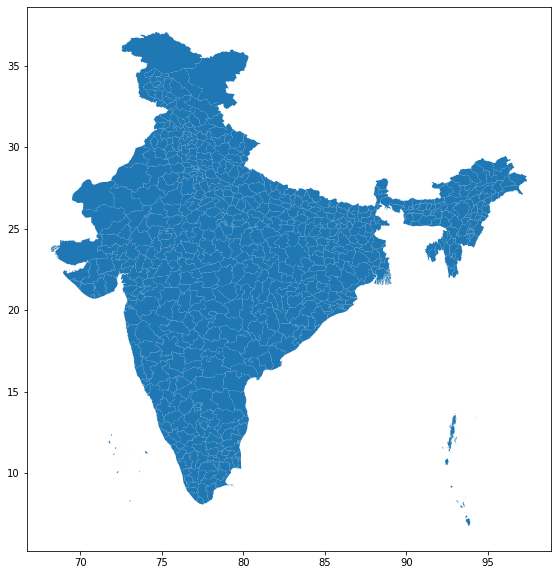

[1]:
import pandas as pd
import geopandas as gpd
import numpy as np
from vayu import interactiveChoroplethPlot
Preparing GDF¶
[2]:
gdf = gpd.read_file("data/Census_2011/2011_Dist.shp")
gdf = gdf[['DISTRICT', 'geometry']]
ax = gdf.plot(figsize=(10, 10))
gdf.head()
[2]:
| DISTRICT | geometry | |
|---|---|---|
| 0 | Adilabad | POLYGON ((78.84971964418659 19.76010317003102,... |
| 1 | Agra | POLYGON ((78.19803304934094 27.40279950600495,... |
| 2 | Ahmadabad | (POLYGON ((72.03455573137722 23.50527451382363... |
| 3 | Ahmadnagar | POLYGON ((74.67332670904928 19.9466963435567, ... |
| 4 | Aizawl | POLYGON ((92.98749173520596 24.40452847808963,... |

Preparing Dataframe¶
[3]:
df = pd.read_csv("data/indiaaq_districtextracts_hourly_avg_pm25.csv").dropna()
plot = df
df = df.drop(columns = ['pm25'])
df = df.replace(0, np.nan).set_index('0', append=True).stack().reset_index().drop('level_0',1).rename(columns={0:'val', 'level_2':'time'})
df.head()
[3]:
| 0 | time | val | |
|---|---|---|---|
| 0 | 1 | 2019-08-20-06:00 | 8.9 |
| 1 | 1 | 2019-08-20-07:00 | 11.6 |
| 2 | 1 | 2019-08-20-08:00 | 16.1 |
| 3 | 1 | 2019-08-20-09:00 | 15.5 |
| 4 | 1 | 2019-08-20-10:00 | 13.3 |
[4]:
map_ = interactiveChoroplethPlot(gdf, df, pollutant = 'pm25', country = 'India', date_time_col_name = "time", value_col_name = "val",
dist_col_name = "0", start_date = "2019-08-20-06:00", end_date = "2019-08-24-06:00",
opacity = 0.4)
0 time val color
0 1 1566261000 8.9 #00CC00
1 1 1566264600 11.6 #00CC00
2 1 1566268200 16.1 #00CC00
3 1 1566271800 15.5 #00CC00
4 1 1566275400 13.3 #00CC00
Done for Districts 0 out of 640
Done for Districts 20 out of 640
Done for Districts 40 out of 640
Done for Districts 60 out of 640
Done for Districts 80 out of 640
Done for Districts 100 out of 640
Done for Districts 120 out of 640
Done for Districts 140 out of 640
Done for Districts 160 out of 640
Done for Districts 180 out of 640
Done for Districts 200 out of 640
Done for Districts 220 out of 640
Done for Districts 240 out of 640
Done for Districts 260 out of 640
Done for Districts 280 out of 640
Done for Districts 300 out of 640
Done for Districts 320 out of 640
Done for Districts 340 out of 640
Done for Districts 360 out of 640
Done for Districts 380 out of 640
Done for Districts 400 out of 640
Done for Districts 420 out of 640
Done for Districts 440 out of 640
Done for Districts 460 out of 640
Done for Districts 480 out of 640
Done for Districts 500 out of 640
Done for Districts 520 out of 640
Done for Districts 540 out of 640
Done for Districts 560 out of 640
Done for Districts 580 out of 640
Done for Districts 600 out of 640
Done for Districts 620 out of 640
Done for Districts 640 out of 640
Map created
Map saved
[5]:
map_ = interactiveChoroplethPlot(gdf, df, date_time_col_name = "time", value_col_name = "val",
dist_col_name = "0", start_date = "2019-08-20-06:00",
end_date = "2019-08-24-06:00", pollutant_ID = 3,
opacity = 0.4)
---------------------------------------------------------------------------
TypeError Traceback (most recent call last)
<ipython-input-5-e0cecef889d9> in <module>
2 dist_col_name = "0", start_date = "2019-08-20-06:00",
3 end_date = "2019-08-24-06:00", pollutant_ID = 3,
----> 4 opacity = 0.4)
TypeError: interactiveChoroplethPlot() got an unexpected keyword argument 'pollutant_ID'
[ ]: